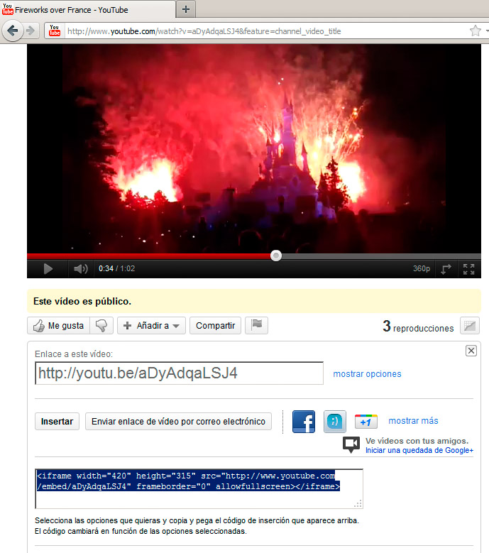
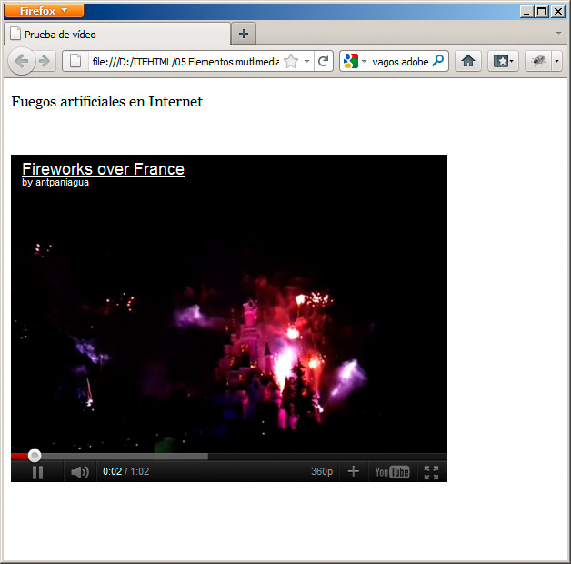

Insertar un recurso externo en nuestra página web tiene muchas ventajas:
- No ocuparemos el espacio de nuestro servidor, ni consumiremos nuestro ancho de banda; el recurso estará alojado en todo momento en el otro servidor.
- Estos servidores especializados suelen proporcionar más velocidad de descarga que el nuestro propio, por lo que en el caso de vídeos se reproducirán de forma más fluida.
- Cualquier cambio o actualización en el recurso se mostrará inmediatamente en nuestra página, sin necesidad de cambios.
Esto último es el único inconveniente de este método: que en cualquier momento, de forma unilateral, el propietario del material puede optar por cambiarlo o retirarlo, con lo que perderíamos el acceso. No obstante, si somos los propietarios, esto deja de ser un inconveniente.
Técnicamente lo que hacemos es similar a crear una pequeña ventana dentro de nuestra página web, para que en su interior se muestre un material que está alojado en otro servidor. Para ello se suelen emplear dos etiquetas: <iframe> es la más habitual en la actualidad y lo que hace es crear un pequeño marco en el que se muestra cualquier recurso o página web; la otra opción es el elemento <object>, que actúa de forma similar, aunque menos versátil. Es el otro servidor el que decide qué método empleará, por lo que no nos debemos preocupar, ya que sólo tendremos que copiar y pegar el código HTML que genere el servidor.
Siga estos pasos para incrustar un vídeo de Youtube en una página web.
1. Acceda a Youtube y seleccione un vídeo. Puede usar éste como ejemplo: http://www.youtube.com/watch?v=aDyAdqaLSJ4
2. Haga clic en el botón Compartir. La dirección que aparece se puede emplear en diferentes sitios, como blogs, herramientas sociales,etc.
3. En nuestro ejemplo haga clic en el botón Insertar que aparece más abajo. Copie el pequeño código HTML que se despliega; será similar a esto que se recoge en la figura:
<iframe width="420" height="315" src="http://www.youtube.com/embed/aDyAdqaLSJ4" frameborder="0" allowfullscreen></iframe>

4. Un poco más abajo podemos personalizar las dimensiones de la ventana y otros parámetros. Tras realizar los cambios, copie el código HTML.
5. Edite la página web con un editor de texto o con un editor web, como BlueGriffon, y pegue el código.
Al probar la página web en un navegador, obtendremos un resultado parecido al de la figura. Toda la potencia de un servidor como YouTube recogida en nuestra página web.

Si observa el código HTML, verá muchos parámetros ya conocidos, como la anchura, la altura, src para indicar la URL del vídeo y otros nuevos, pero cuya función es fácilmente deducible (en nuestro ejemplo, frameborder para mostrar un borde y allowfullscreen para permitir reproducción a pantalla completa).
Este procedimiento es idéntico para el resto de los sitios que alojan vídeos u otros tipos de recursos en Internet.
Actividad 4
Pregunta Verdadero-Falso
Verdadero Falso
Verdadero Falso
Verdadero Falso
Verdadero Falso